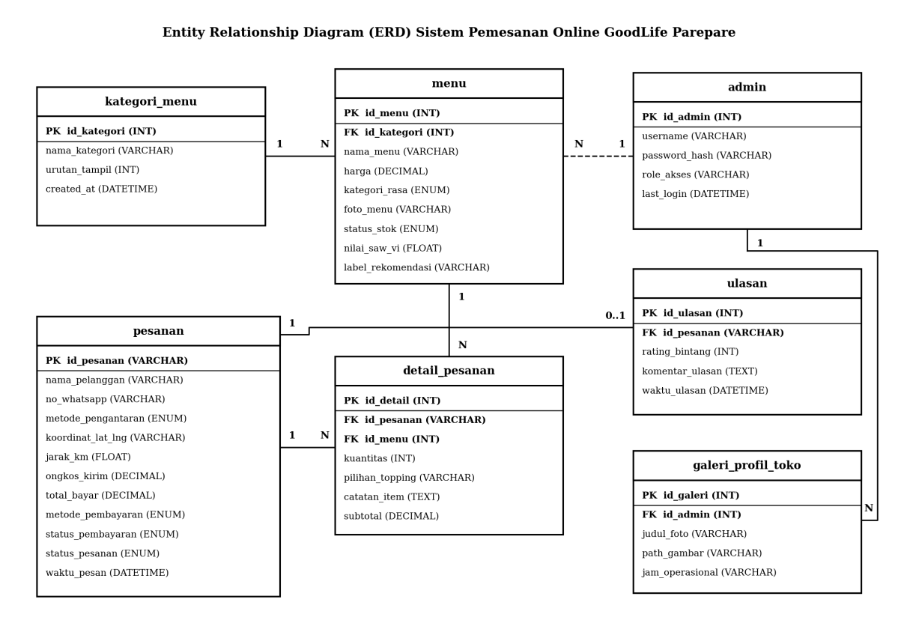

Good Life — Sistem Pemesanan Online Berbasis Web Terintegrasi
Pendekatan Enterprise Architecture (EIS) & Rekayasa Keamanan Sistem Informasi
Good Life merupakan proyek perancangan dan implementasi sistem pemesanan online kuliner untuk mengatasi inefisiensi pencatatan manual nota kertas dan chat WhatsApp di gerai Good Life Parepare (kekeliruan pesanan hingga 12%, waktu konfirmasi 15–20 menit). Solusi dibangun berbasis web dengan mengombinasikan integrasi arsitektur enterprise dan mitigasi keamanan siber sejak tahap perancangan SRS.
Security Requirements Analysis
Merumuskan 11 spesifikasi Non-Functional Requirement terukur (NFR-001 s.d. NFR-011): waktu checkout < 90 detik, uptime layanan >= 99% jam operasional (15:00–23:00 WITA), otorisasi anti-bypass, penegakan prinsip Data Minimization, dan kepatuhan WCAG 2.1 Level AA (kontras >= 4,5:1).
OWASP Top 10 Based Analysis
Merancang kontrol mitigasi terstruktur: A01 Broken Access Control (RBAC guard pada route admin), A03 Injection (100% PDO Prepared Statements), A04 Insecure Design (validasi total harga dan tarif ongkir di sisi server), serta A07 Auth Failures (Bcrypt, token Anti-CSRF, dan rate limiting login 5x).
STRIDE Threat Modeling
Menganalisis 6 vektor ancaman siber terhadap entitas dan alur data Good Life: Spoofing (autentikasi sesi & CAPTCHA), Tampering (re-evaluasi harga di server), Repudiation (logging Order ID), Information Disclosure (isolasi .env), DoS (rate limiting), dan Elevation of Privilege (RBAC middleware).
DFD & 3 Trust Boundaries
Merancang arsitektur Data Flow Diagram dengan pemisahan 3 batas kepercayaan: Trust Boundary 1 (Zona Publik/Klien), Trust Boundary 2 (Zona Server Aplikasi Web PHP 8.2+ dengan RBAC dan Anti-CSRF), dan Trust Boundary 3 (Zona Penyimpanan Basis Data MariaDB dan file .env).
Requirement Traceability Matrix (RTM)
Menyusun matriks ketertelusuran kebutuhan 100% yang menghubungkan 16 Fitur Produk (FR-001 s.d. FR-016), 16 Use Case (UC-01 s.d. UC-16), Kriteria Penerimaan Gherkin (Given-When-Then), hingga 51 Test Cases (TC-001 s.d. TC-051) guna menjamin validitas pengujian QA.
Security Testing Support
Merancang 20 test case keamanan khusus (TC-032 s.d. TC-051) menggunakan teknik Equivalence Partitioning dan Boundary Value Analysis (uji parameter SQLi katalog, uji sanitasi XSS catatan pesanan, validasi upload file maks 5MB, batas COD tepat Rp200.000, serta forced browsing).

Memisahkan browser publik, proses server PHP, dan layer persistensi database.

Normalisasi relasi data transaksi, pesanan, menu, dan otorisasi admin.